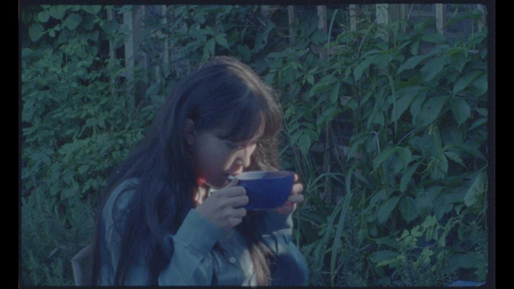

Maud Rowell
Maud Rowell is a writer, translator, and poet based in London. After studying Japanese at the University of Cambridge, she trained as a journalist, and worked freelance for several years, writing for brands like Art UK, Hidden Compass, and SUITCASE magazine. She was diagnosed with a rare, degenerative form of blindness aged 19, and often uses writing—a craft she has loved and worked at all her life—to educate and engage people on disability, encouraging audiences to see differently.
Her debut book, Blind Spot: Exploring and Educating on Blindness (404 Ink, 2021) is a collection of essays which carry readers on a whirlwind tour through time and space—from Japanese tube stations to the 18th century museum— to showcase what the world looks like for someone who does not see. She offers practical insights based on her own experiences, as well as spotlighting incredible blind pioneers—explorers, artists, scientists, and more—through history and the current day.
In 2021, she won an international competition, the Holman Prize (run by the San Francisco-based charity, LightHouse for the Blind and Visually Impaired), securing $25,000 with which to do any ambitious, creative project and challenge prevailing ideas of what the blind can do. In June 2022, she embarked on a year-long solo journey around some of Japan’s remotest parts, from uninhabited islands to volcanoes hundreds of kilometres out to sea. She returned to the UK in July 2023 and is now working on her next book, a work of literary travel writing about her Holman Prize journey.
When she’s not working on that project, she can be found writing waka (a form of classical Japanese poem with a 5-7-5-7-7 syllable pattern) about light, grief, trees, and language, or surrealist short stories in Japanese. She also inherited a love of film photography from her father, and likes to use black-and-white or colour infrared film loaded into battered old cameras to articulate non-normative ways of seeing. By day, she works in Northern Ireland policy for the Department for Environment, Food and Rural Affairs (Defra) and as a type of parliamentary reporter for the House of Commons.